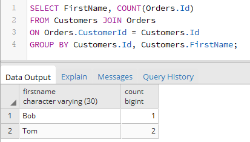
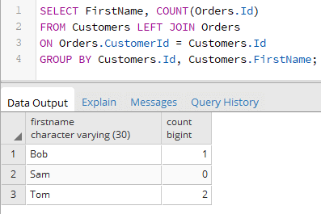
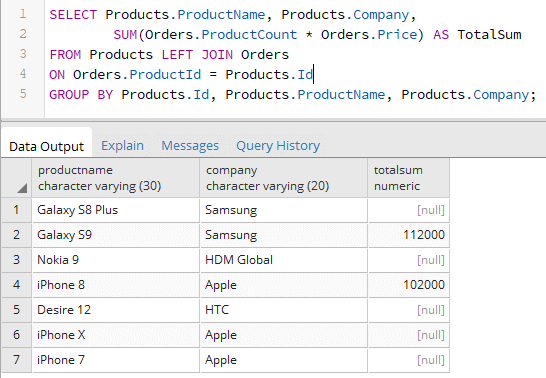

Вернуться на главную страницу →
Вернуться на главную страницу →
Группировка в соединениях
Более сложным вариантом использования соединений INNER/OUTER JOIN представляет их сочетание с выражениями группировки, в частности, с оператором GROUP BY. Например, выведем для каждого покупателя количество заказов, которые он сделал:
Критерием группировки выступают Id и имя покупателя. Выражение SELECT выбирает имя покупателя и количество заказов, используя столбец Id из таблицы Orders.
Так как это INNER JOIN, то в группах будут только те покупатели, у которых есть заказы.
Если нужно получить также и тех покупателей, у которых нет заказов, то можно использовать OUTER JOIN:
Или выведем товары с общей суммой сделанных заказов:
